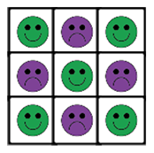

Een computerspeler maken
Op deze pagina, ga je de computer tegen een menselijke speler laten spelen.
Het spel werkt nu zo dat twee personen omstebeurt spelen. Maar eigenlijk heb je geen computer nodig om de zetten van spelers bij te houden. Je kan immers zelf herkennen wanneer iemand gewonnen heeft. We willen nu dat een persoon een potje kan spelen tegen een computerspeler die uit zichzelf zetten doet. Om het iets makkelijker te maken, nemen we aan dat de mensenlijke speler altijd mag beginnen en daarom X is. De computer is dus altijd O.
Eerst maak je een computerspeler die willekeurige zetten op het bord doet. (Hij zal niet heel goed
speler, maar daar zullen we later voor zorgen zodra we alle benodigde code hebben.) Zodra het programma
beslist heeft welke zet het wil doen, gebruik je zend signaal om de kloon met het bijbehorende
positienummer van uiterlijk te veranderen. (Voor de menselijke speler doen we dit met wanneer ik
aangeklikt word, maar dit kan niet met de computerspeler omdat die niet kan klikken op de
vierkanten.)
Zend signaal stuurt een bericht aan alle sprites in het project. Ieder script dat
begint met wanneer ik ontvang met het passende bericht in het invoervak, zal uitgevoerd
worden.
De signaal-rapporteur kan je zien als je in het wanneer ik ontvang als
invoer kiest voor "elk signaal" en daarna wanneer ik ontvang uitklapt met
het pijltje aan de rechterkant van het blok. signaal rapporteert de waarde van het
signaal dat ontvangen is.
- Open je H5-BoterKaasEnEieren-project als je dit nog niet gedaan had.
- Na de code voor X' beurt, gebruik
zend signaalmet een willekeurig getal tussen 1 en 9 als bericht. (Het bijbehorende vierkant zal gevuld worden met een O, zodra je de code voor het ontvangen van het bericht hebt geschreven.) -
Maak dan een
wanneer ik ontvang-script dat elk signaal als invoer accepteert. Als het positienummer van de kloon overeenkomt met hetsignaal, voer dan de zet van de computer uit in dit vierkant en controleer of er wellicht iemand gewonnen heeft of dat er een gelijkspel is - Speel omstebeurt met je partner boter, kaas en eieren en los probelem op die je tegenkomt tijdens het spelen.
wanneer ik aangeklikt
wordt naar wanneer ik ontvang, kan je een nieuw blok maken en daar de
code in zetten. Je zet dan dit blok in beide scripts. Dit is een van de vele vormen van
abstractie bij programmeren: heb nooit twee kopieën van hetzelfde stuk code. In plaats
daarvan is het beter om dit in een aparte functie te zetten en twee keer die functie aan te
roepen.
maak
bord aan zodat het positienummer van de ouder niet een getal tussen de 1 en 9 is.
Zorg dat de computer geen willekeurige zetten meer doet, geef hem een strategie. In tegenstelling tot
mensen zijn niet alle vierkanten bij boter, kaas en eieren gelijk. Zetten in het midden (5) of in een
hoek (1, 3, 7 en 9) zijn beter dan zetten aan de rand (2, 4, 6 en 8).

-
 Waarom zou het beter zijn om in het midden of in de hoeken te spelen? Bedenk een korte logische
uitleg. Vergelijk je uitleg met die van andere leerlingen.
Waarom zou het beter zijn om in het midden of in de hoeken te spelen? Bedenk een korte logische
uitleg. Vergelijk je uitleg met die van andere leerlingen.
- Maak een
 blok dat
rapprteert wat de beste positie op het bord die nog niet gevuld is.
Gebruik het als invoer voor je
blok dat
rapprteert wat de beste positie op het bord die nog niet gevuld is.
Gebruik het als invoer voor je zend signaalinstructie, in plaats vanwillekeurig getal. - Speel weer omstebeurt potjes tegen de computer. Controleer goed dat de computerspeler alleen vierkanten aan de rand pakt als alle vierkanten in het midden en in de hoeken al bezet zijn.